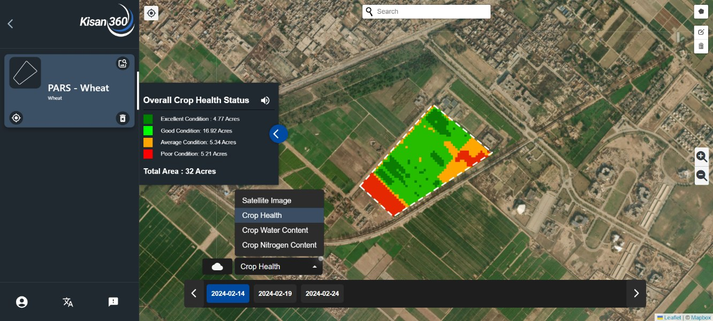
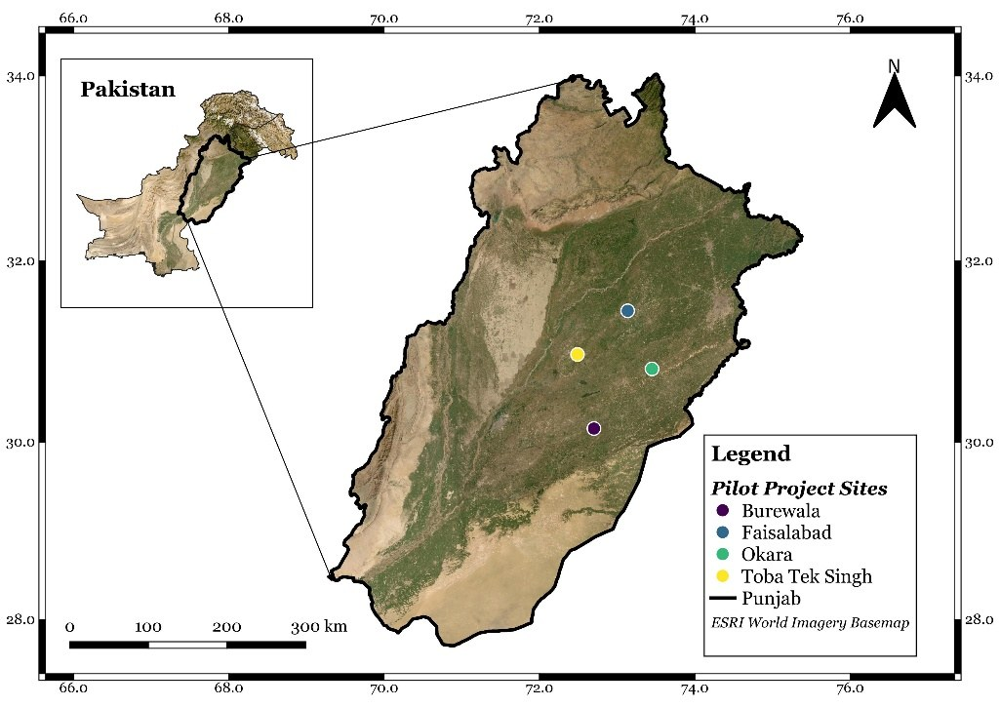
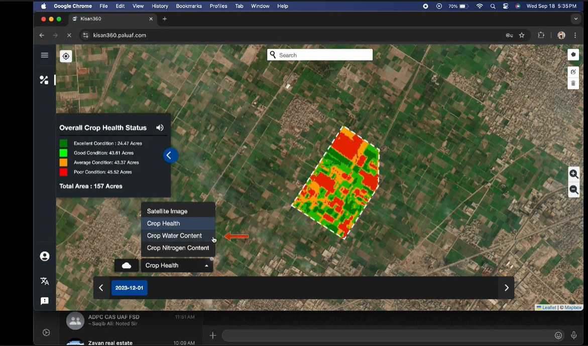
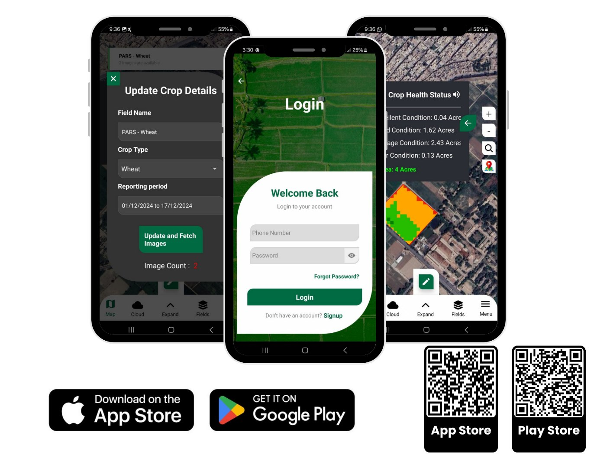
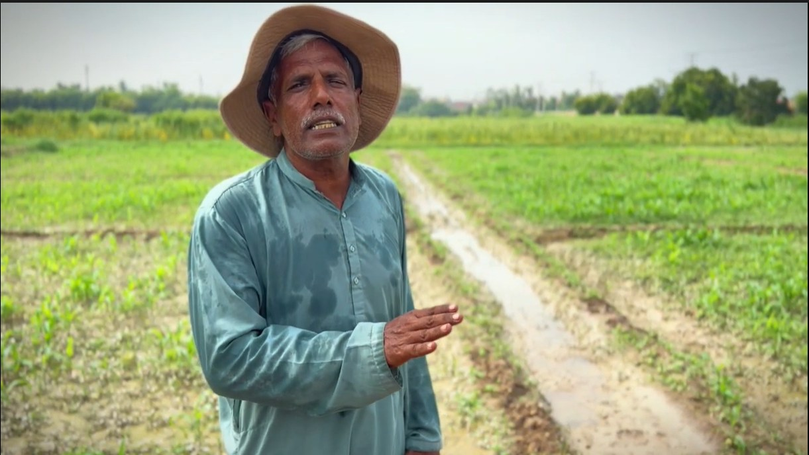

Satellite-Based Crop Monitoring and Decision Support — Kisan360
Translating field-scale Earth observation products into practical crop-monitoring information for farmers, extension personnel and agricultural institutions.
← Back to ProjectsProject Overview
Kisan360 was developed as part of an ADPC iCARE climate-smart agriculture project implemented through the Centre for Advanced Studies in Agriculture and Food Security, University of Agriculture Faisalabad. The project aimed to make field-scale Earth-observation and weather information easier to use in practical crop monitoring and agricultural extension.
Pilot implementation covered Faisalabad, Okara, Toba Tek Singh and Burewala. The wider project delivered a web portal and Android / iOS application, field sensing infrastructure, training materials and stakeholder engagement activities. This page focuses specifically on my remote-sensing, geospatial and implementation contribution.

My Role
I worked as Engineer — Precision Agriculture, with responsibilities spanning satellite-data processing, technical implementation, field activities, stakeholder training and project reporting.
- Prepared and applied Google Earth Engine workflows for field-scale crop monitoring.
- Worked with Sentinel-2 vegetation, water / moisture-status and chlorophyll-sensitive indicators.
- Helped translate continuous satellite indices into simpler crop-condition classes for platform users.
- Supported UAV and field activities associated with project implementation.
- Participated in farmer / extension demonstrations, stakeholder training and technical documentation.
Technical Workflow


Deployment & Outreach
The project extended beyond analytical development into field testing, farmer and extension training, and institutional engagement with agricultural organizations.

What I Took From the Project
Kisan360 complemented my crop-modeling research by exposing me to the operational side of Earth observation: how technical outputs need to be simplified, tested, communicated and used by people outside a remote-sensing research environment.